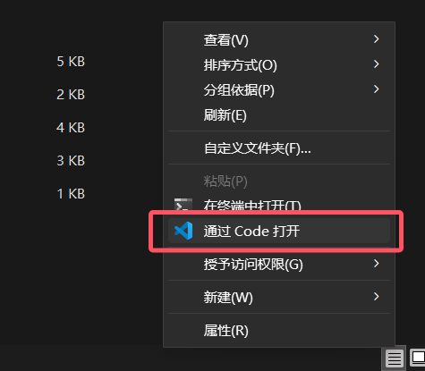
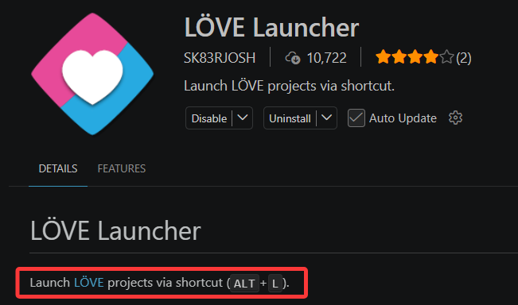
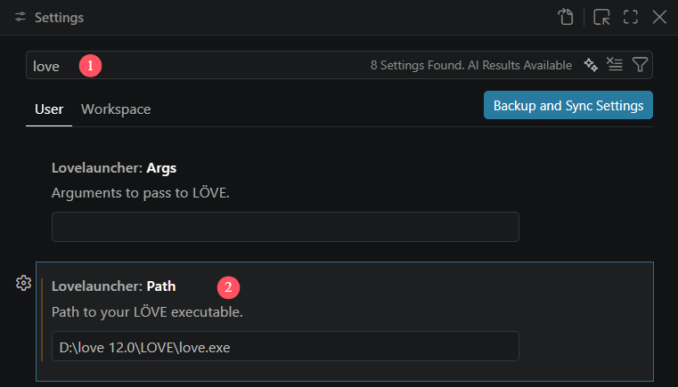
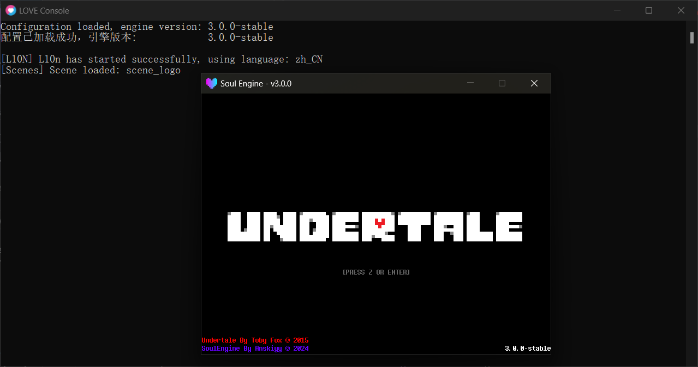

环境配置
这四个字虽然听起来很吓人，但实际上配置起来相当简单——
你完全不需要动环境，就是装一些压缩包而已。
安装引擎与SoulEngine¶
截至目前，不论love 12+版本跳票或是正式发布了，都请下载12+版本。
点我下载
在这之后，下载 SoulEngine
确保你安装的至少是3.0.0以上的版本，最显著的验证方法就是点开 conf.lua ，查看第二行，若拥有 3.0.0-stable 或更新版本的字样，则证明版本无误。
-- Soul Engine Configuration File
_VER = "3.0.0-stable" -- ← 就是这一行
_VER 在哪
它写在 conf.lua 的第 2 行（第 1 行是注释）。注意 conf.lua 里没有 _VERSION —— 那个是 Lua 自带的全局量，和引擎版本无关，详见 配置文件 。
LOVE 的 12.0 仍在开发中
conf.lua 里的 t.version 写的是 12.0 。如果你在官网只找到 11.x 的稳定版，需要去nightly / 测试版那一栏下载 12.x，否则引擎用到的 API 会缺失。
3.0.0的API大概已经全部稳定下来，后续更新的时候这些API都不会进行更换。
接下来我们将按不同操作系统分流，请各位时刻跟随自己应属于的说明部分。
Windows 开发¶
对于 Windows ，可选的编程工具很多，你甚至也可以通过自己写命令行来运行游戏。
但是如果要选一个最方便的，目前我推荐： Visual Studio Code 。是蓝色的丝带，不要下载成紫色的。
Linux 开发¶
也推荐 VSCode ，但是 Linux 的命令行是最大的看点。
安装 LOVE2D 后， love 命令会被自动注册到环境当中。
所以对于 Linux 用户，可以在终端运行如下命令来运行：
love .
macOS 开发¶
可以在如上链接处下载（或者应用商店等地方均可）。
仍然推荐用 VSCode 。
Android 开发¶
国内用户可以选择 MT管理器，此应用虽然部分功能收费，但是在 SoulEngine 的全部开发中完全用不到。
下载地址：https://mt2.cn。
关于MT的说明
此应用无害，若判断为有害均为误判。
前提是你是在如上链接所说的官网下载的。
国外用户可以选择（我真不信哪个外国人会专门看中文页面） Squircle CE 。
抛开工具选择，首先需要去下载 LOVE for Android 。
在桌面会多出两个图标，一个是默认启动特定文件夹路径的主程序，另一个是可以自选路径，但是通常要打包成 .love 随后用Loader启动。
所以在开发中，软件最好具备直接点开 .love 文件进行修改的能力。
iOS 开发¶
LOVE2D 在 iOS 操作系统上是收费的，尽管 SoulEngine 永远也不会收费。
Warning
请自行考虑是否决定购买，但我通常不建议这么做。
在完成上面所有不同操作系统的配置方法后，可以继续阅读下一小节。
使用 VSCode 打开项目¶
首先进入 SoulEngine 的项目根目录，在空白区域 右键 ，可以看到弹出一个菜单，找到 通过 Code 打开 。

或者如果你的菜单栏打开之后看不见 通过 Code 打开 选项，也可以不走右键打开的图形化道路， 我们也有命令行版本的：
在项目目录下打开 cmd 或 Powershell 执行：
code .
打开之后，若进行安全性询问请无条件通过。
为什么无条件通过？
你是作者，为什么不无条件通过？是信不过你未来的游戏吗？
在这之后，可以看到侧边栏有很多文件，这些就是项目的所有内容了。
拓展的选择¶
为什么需要下载拓展
LOVE2D 的游戏启动方式并不是打开程序后选择文件夹，而是需要手动把文件夹 拖拽 至 love.exe 上打开。
而每次调试都需要重新重复此操作，会导致不必要的麻烦。鉴于此，我们在 VSCode 中选择一个可以 自动启动 的拓展。
对于拓展，我最推荐的是 LOVE Launcher - SK83RJOSH 拓展。
我推荐它的原因是：
- 使用
ALT + L按键可直接启动游戏。 - 它不会过多干预工作区，无代码补全支持，仅拥有轻量的快速启动能力。
- 它是一个可以直接在
VSCode中被搜索并下载的轻量拓展。

设置拓展¶
安装之后，我们需要告诉 拓展 ：我需要的love.exe在哪？
点击 VSCode 左下角的小齿轮，找到 Settings 选项，随后按照下面图片中的设置：
- 搜索
love，这可以帮助我们迅速定位到拓展。 - 修改第二个选项为你的
love.exe路径。（路径没有打码，但请不要死板的对照设置，图片里的路径一般不能用）

启动验证¶
做完这一步后，按下 Alt + L 组合键，查看是否正常打开游戏。
若启动后出现如下图片中的情况，则说明启动成功了：

收尾¶
到此，除 Android 与 iOS 外的所有操作系统安装配置问题已解决完毕。
使用 MT 管理器进行开发¶
MT 管理器相对来说较简单，因为 只有一种选择 。
首先下载之后，你或许会下载到 .love 文件，这是直接可用的。
若下载到了 .zip 文件，也可以直接进行使用。
打开方式：单击 LOVE Loader 程序，选择对应的压缩文件即可启动。